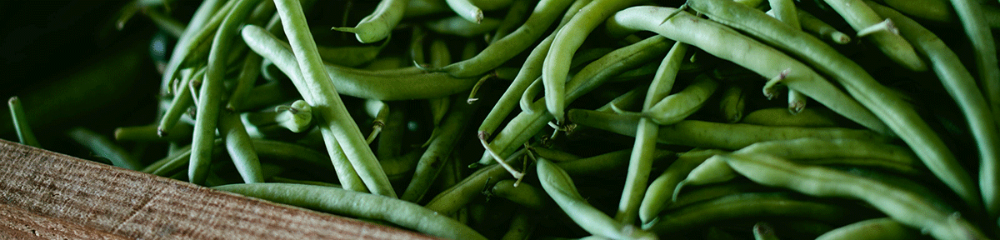

Welcome to our little corner of the internet!
Welcome to Rogue Pickings, the roaming truck bringing you the freshest ingredients and ideas in food. Our team works hard so you can be sure our ingredients are always fresh and picked carefully. Our menu changes every day and is made with you in mind. We can't wait to come to you! Check out our locations to see where you can find us.
Today's Specials
Our Awesome Reviews
"I got so excited about the yumminess of the falafel salad that I am typing this review as I inhale my lunch. Yes it is that good.... Service was super friendly and quick. Can't wait see you Rogue Pickings again tomorrow!"
Contact Us
1001 Potero Ave
San Fransico, CA 94110
(415) 206-8000